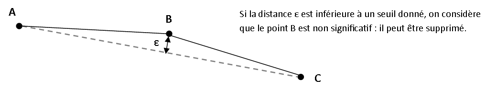
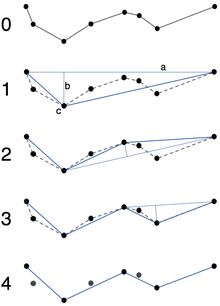
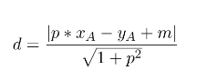

Exercices de Python
Exercices de mise en pratique de Python
TP — Distance entre points
Dans ce TP, nous cherchons à évaluer la dispersion de points tirés aléatoirement dans un carré de côté 1. Nous nous intéresserons aux distances minimale, maximale et moyenne entre les points, ainsi qu’à la position du centre de gravité du semis de points.
Tout au long du TP, un point sera représenté par un couple de coordonnées (x, y).
Étapes du TP
-
Écrire une fonction de tirage aléatoire d’un point dans une emprise définie par les coordonnées
((xmin, ymin), (xmax, ymax)) -
Écrire une fonction de tirage de
npoints aléatoires dans cette emprise : -
Modifier votre fonction précédente pour que, si les coordonnées de l’emprise ne sont pas précisées, elles soient par défaut
((0, 0), (1, 1)) -
Compléter votre programme avec une fonction calculant le centre de gravité d’un ensemble de points (c’est-à-dire la position moyenne des points).
-
Ajouter une fonction calculant les :
- distances minimale et maximale entre deux points de l’ensemble
-
distance moyenne entre tous les points
-
Observer comment évoluent ces valeurs lorsque le nombre de points du semis augmente.
TP — Généralisation cartographique
Algorithme de Douglas-Peucker
L’algorithme de Douglas-Peucker est utilisé pour simplifier une polyligne, en supprimant des points non significatifs de la forme globale de la géométrie.
La simplification proposée consiste à remplacer une polyligne de plusieurs points par une ligne à deux points si la distance du point le plus éloigné de la droite formée par les extrémités de la polyligne est inférieure à un seuil.

Figure 1 – Principe de simplification d’une polyligne
Le principe de l’algorithme est le suivant :
- À l’étape initiale, les extrémités de la polyligne sont sélectionnées.
- Pour chacun des points entre ces deux extrémités, on calcule alors la distance du point à la droite liant les extrémités.
La suite du traitement dépend de la valeur de la distance maximale ainsi calculée :
- S’il n’y a aucun point, l’algorithme se termine (la ligne n’est pas simplifiable) ;
- Si la distance maximale est inférieure à un seuil donné, on supprime tous les points (ils sont non significatifs) ;
- Si la distance maximale est supérieure au seuil, la ligne n’est pas simplifiable :
- on divise la polyligne en deux parties allant :
- de la première extrémité au point intermédiaire le plus distant
- du point intermédiaire le plus distant à la deuxième extrémité
- on répète l’opération sur les deux parties.

Figure 2 – Principe de l’algorithme de Douglas-Peucker — source Wikipedia
Dans tout ce qui suit :
- un point est représenté par un couple de coordonnées
(x, y) - une droite ou un segment est représenté par un couple de couples de coordonnées :
((x_a, y_a), (x_b, y_b))
Nous commencerons par écrire des fonctions générales qui seront utiles pour l’implémentation de l’algorithme à la question suivante.
Étapes du TP
- Écrire une fonction calculant la pente d’une droite
-
Écrire une fonction calculant l’ordonnée à l’origine d’une droite (elle prend en paramètre les coordonnées d’un point A de la droite ainsi que sa pente)
-
Ajouter une fonction
distance(point, droite)Cette fonction calcule la distance d’un point A à une droite. Elle devra gérer les cas particuliers des droites verticales ou horizontales.
Dans le cas général, pour une droite d’équation :
y = p * x + m
la distance d’un point A(xA, yA) à cette droite est donnée par la formule :

-
Écrire une fonction
douglas_peuker(points, e)Cette fonction simplifie une liste de points selon la méthode de Douglas-Peucker, avec un seuile -
Tester différents seuils sur la liste de points suivante :
(0,0), (1,0), (10,1), (11,1), (15,2), (17,1), (20,1), (27,0), (28,4), (30,6), (33,8), (34,0)